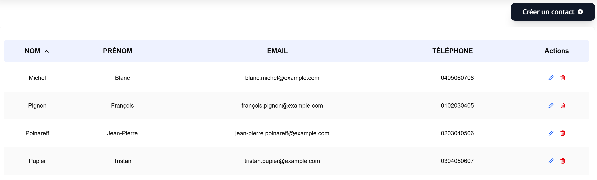
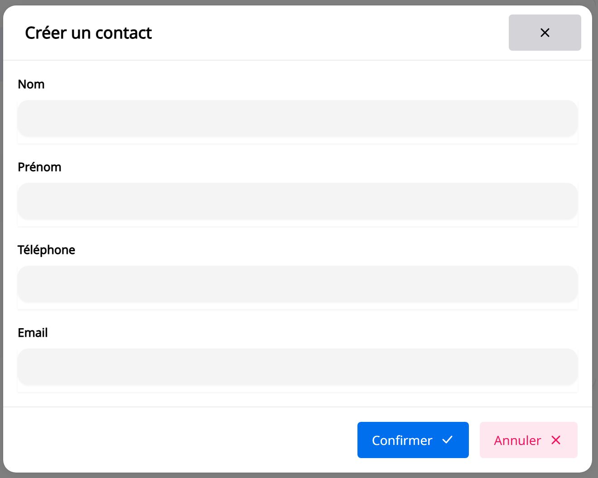
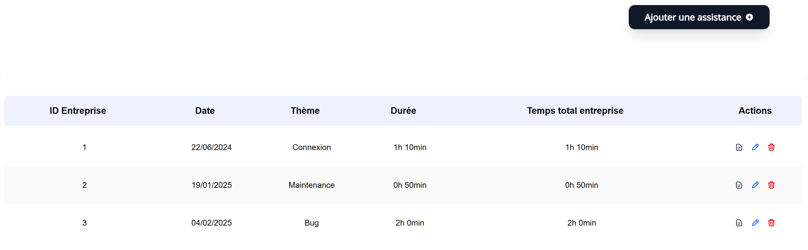
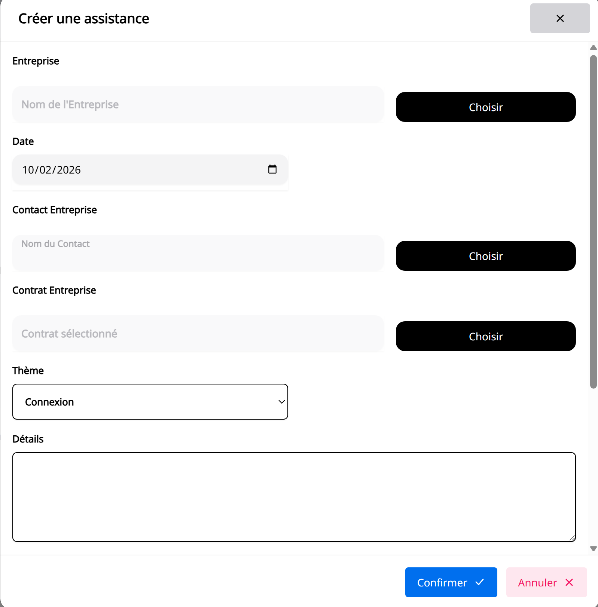
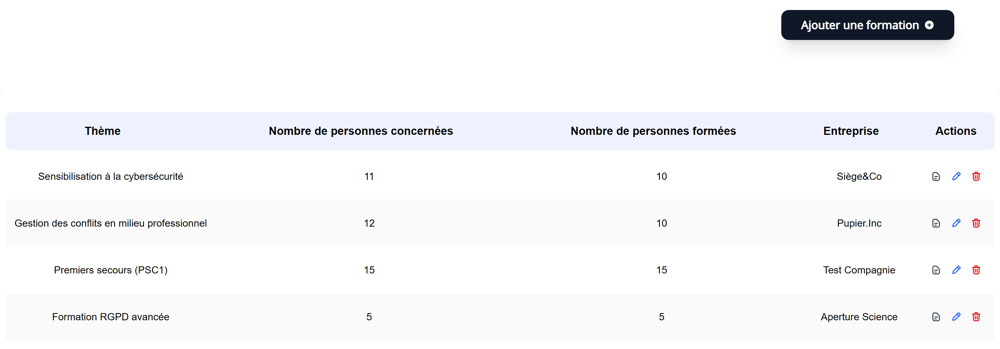
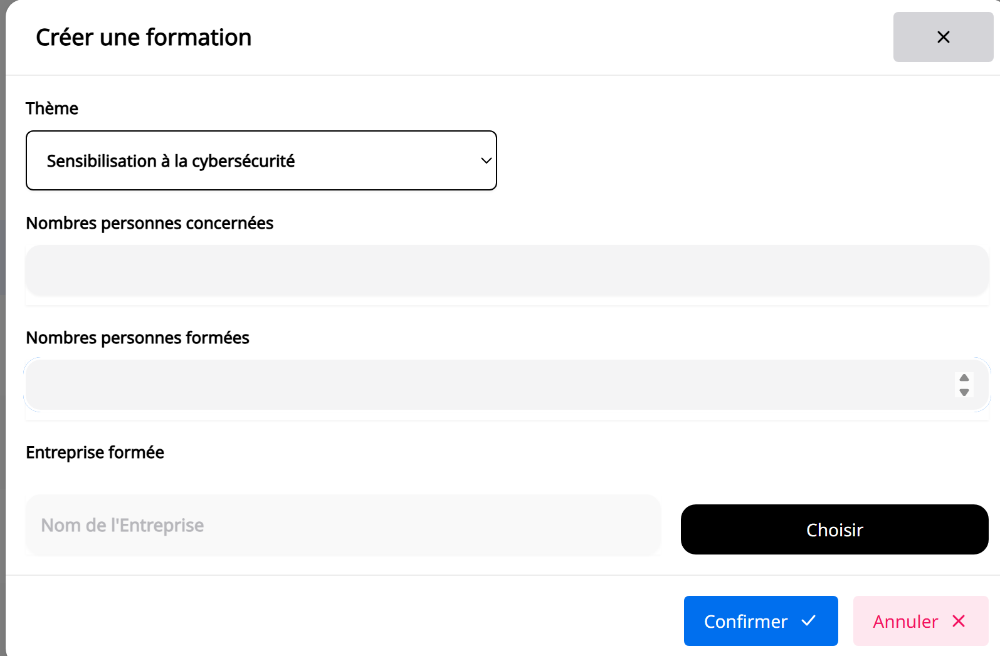
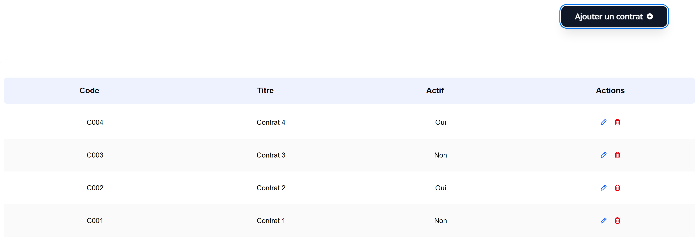
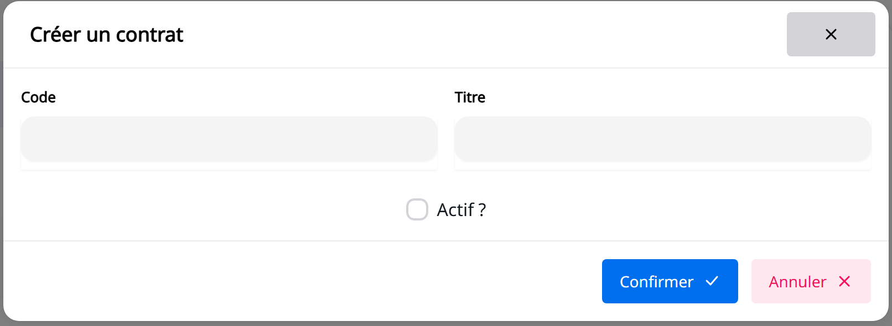

Durant mon stage de Première Année, on m'a donné 4 semaines pour ajouter une section Signataire permettant de gérer les signatures sur les documents PDF générés sur la version Web SAAS du logiciel.
J’ai participé aux réunions d’ouverture et de fermeture de sprint avec mon maître de stage, le scrum master et le directeur commercial. Le livrable était le code validant le ticket attribué, fusionné sur GitHub.
J’ai commencé par réaliser un schéma de l’onglet Signataire, puis j’ai participé à la création des SPECS. Ensuite, j’ai développé le front-end. Voici quelques images :
Avec mes collègues, nous avons créé la table Signataire dans la base de données via Prisma, ce qui m’a permis de développer la partie Back (API + BDD).
Enfin, j’ai intégré les signataires aux autres modules pour permettre l’ajout automatique des signatures dans les PDF générés.
Durant mon stage de Deuxième Année, j’ai travaillé sur un nouveau logiciel en début de développement. J’ai eu 6 semaines pour créer les modules Contacts, Assistances, Formations et Contrats.
Comme en première année, j’ai participé aux réunions de sprint et livré du code validé puis fusionné sur GitHub.
Je me suis appuyé sur une maquette pour créer le front-end. Voici quelques images :








J’ai ensuite relié ces modules à la base de données existante et créé les routes API nécessaires (CRUD).
Pour finir, j’ai intégré ces modules au module Entreprise afin de pouvoir les associer à une entreprise.
Projet visant à consulter et réserver des ressources d’un bâtiment fictif. Développé en PHP avec une base de données HeidiSQL.
À partir d’une version fonctionnelle en C#, j’ai ajouté le mode 2 joueurs, la sauvegarde de partie, l’historique, une API dictionnaire et une base HeidiSQL.
Projet from scratch, avec l'aide de mon camarade, j'ai créé un site web Vue qui permet de s'inscrire à un concours de boulangerie grâce à une API Symphony lié à une base de donnée HeidiSQL.
Images du site bientôt...
Également from scratch, j'ai créé une application mobile, soutenu par une base SQLite, qui peut récupérer les boulangeries inscrites au concours, les évaluer puis envoyer leurs évaluations à la base de donnée HeidiSQL.
Images de l'application mobile bientôt...
Lorsque le concours est terminé, l'administrateur peut générer les résultats du concours (les 3 meilleurs boulangeries) grâce aux notes de l'application mobile.
Images des résultats du concours bientôt...